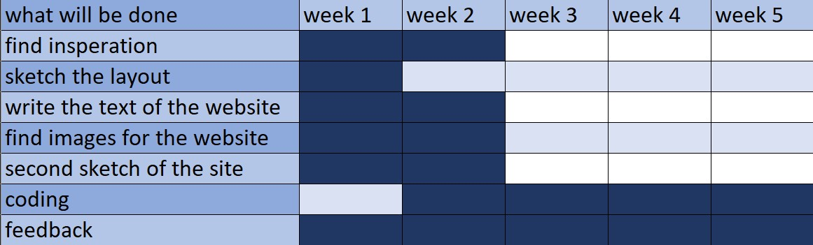
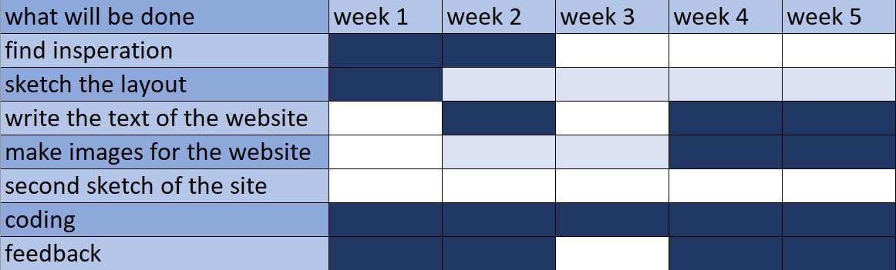

There was quite the pressure on making a plan from the teachers,
stressing how important it was for time management, and I agree, it does help with structuring
one's time. I put some thoughts into my plan, thinking of the logical time to give each section
of the work, and I ended up with the picture to the right. It seemed reasonable, and like a plan
I could follow.

But I quickly ditched the plan. I ended up finishing some thinngs quicker,
I didn't make a second sketch as I detailed the first. Eventually, I saw that there would be more
coding than I had anticipated, and many problems halted my progress (but thankfully they were fixed
eventually).
I planned on making the website mobile-friendly and planned how it would look without
sketching that down, but that was scraped as a week to the deadline, I wasn't that close to finishing
the making of the website. The logo was done in the last week, same to the design manual and most of
the text of the website along with the translations. It was a lot of work, but thankfully it was done
before the deadline.
The picture to the right is how I ended up spending my time.
